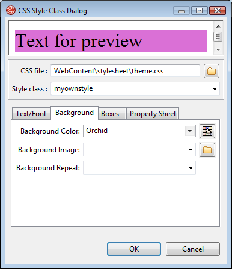
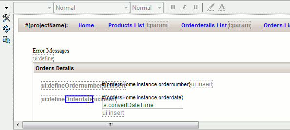
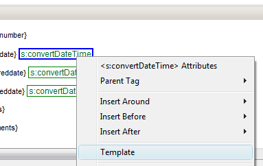
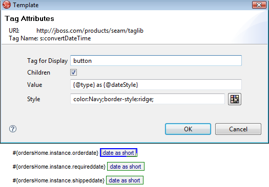
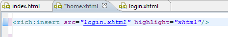
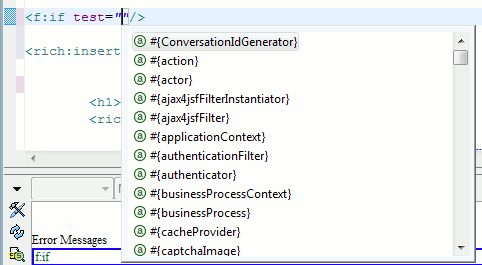
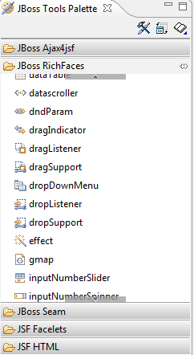

General
When opening Visual Page Editor on Vista users were previously presented with 2 security check dialogs caused by regedit being used to check for XULRunner installations. This check is now removed and Vista users should have two less UAC dialogs to worry about.
We did another round of speed improvements to the Visual Page Editor and now typing directly in the visual part is more fluent.
Visual Page Editor
There is now a CSS class wizard that can be used to add or edit CSS styles in existing CSS style files.
This wizard is also utilized in the Visual Page Editor to allow editing of tags external styles directly instead.

The visual page editor now has a option to show non-visual tags.

When enabled a small grey box with the non-visual tags will be drawn in the visual part to more easily see where the boundaries are and to provide a way to select them more easily by just clicking.

It have always been able to setup a template for unknown tags by right clicking them in the Visual Page Editor:

We have improved the dialog for defining the template to allow you to select which html tag to use and instead of restricted styling options you can know use CSS to define the style.

Visual Page Editor has a preference for showing the raw EL or render the translated string for resource bundles. In previous versions there were problems with rendering the resource bundles when the content came from nested includes. That is now fixed making it available at all levels.

Richfaces tags <rich:insert> and <aj4:include> now has OpenOn support

This means you can use F3 or Ctrl+Click on the src attribute and navigate directly to the resource.
EL code completion have been enabled for more JSF Core tags.

Drag'n'Drop of components now show a caret to indicate where the component will be dropped.
Richfaces tags now have unique icons in the JBoss Tools palette instead of all using the default tag icon.

rich:hotKey, rich:ajaxValidator, rich:graphValidator, rich:beanValidator, rich:extendedDataTable is now supported in the Visual Page Editor.
We also added initial support for some new tags from JSF 2: h:body, h:head, h:outputscript, h:outputstyle